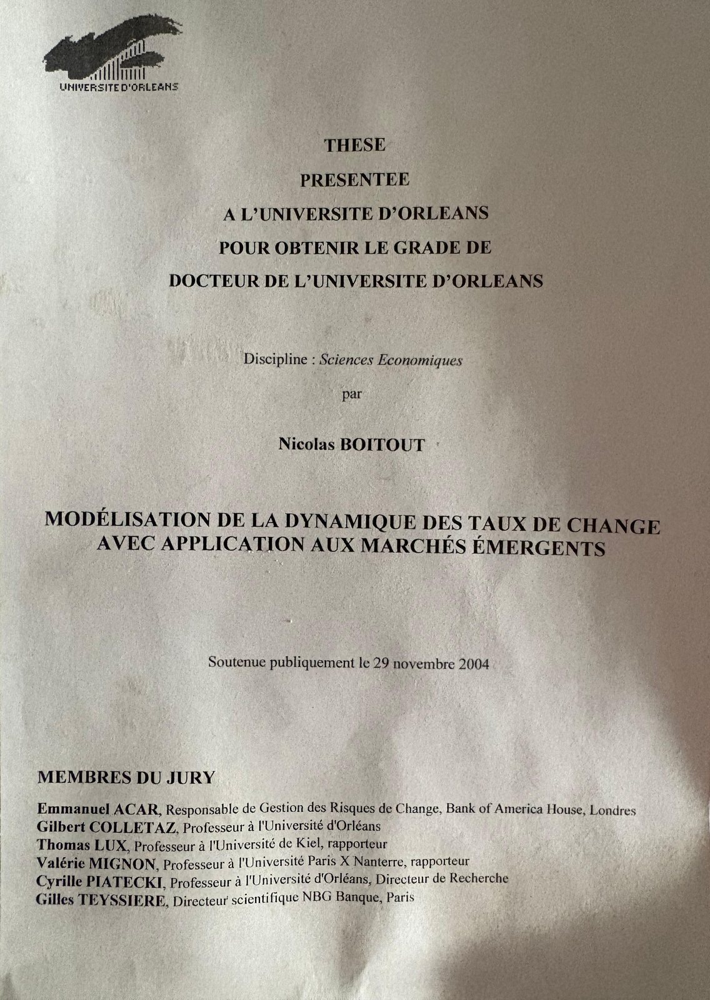

2003 · 2026
A personal note, 23 years later
In September 2026, OpenAI announced a resolution to the Navier–Stokes Millennium Problem. The news immediately took me back to my PhD.
More than twenty years ago, while doing my PhD in finance, I was working with a research group composed mainly of physicists. They were exploring how ideas developed to understand turbulence or earthquakes could be applied to financial market crashes and volatility.
This was completely new territory for me. Fascinating.
When I returned to the thesis last week, I knew the digital files were lost. The PDF was gone. The code was gone. All I had was the printed copy.
I took photographs of every page and digitised the full document.
I then gave the first chapter to GPT. In less than one minute per chapter, it analysed research that had taken me four years to complete. Its conclusion was reassuring: for work written more than two decades ago, it was not bad. Some passages had aged surprisingly well.
One minute for a chapter. Four years for a thesis.
So I decided to put the work online.
With the help of coding agents, I rebuilt the models, tests and simulations as interactive laboratories. A few hours later, experiments that had once existed only as equations, tables and printed charts were running again in a browser.
The interface is new. The research is not.
Each laboratory here remains deliberately faithful to the original equations and assumptions. Where the manuscript is ambiguous or incomplete, the website says so. Nothing is quietly corrected to make my younger self look right.
This website is therefore not simply an archive. It is a conversation between research conducted 23 years ago and tools that none of us could have imagined at the time.
Rebuilding this work gave me a concrete glimpse of the acceleration now taking place in research. Powerful AI systems radically compress the time needed between an idea and a working experiment. Work that once required months or years can now be reconstructed, tested and shared in hours.
Bucharest, 15 September 2026

Université d'Orléans
Thèse
présentée
à l'Université d'Orléans
pour obtenir le grade de
Docteur de l'Université d'Orléans
Discipline : Sciences Économiques
par
Nicolas Boitout
Mod��lisation de la dynamique des taux de change avec application aux marchés émergents
Soutenue publiquement le 29 novembre 2004

{kind=link}
Three laboratories are live. One chapter is in preparation.
-
Chapter One Interactive
Towards a multifractal paradigm of stochastic volatility
Information does not arrive evenly, and almost every familiar feature of returns follows from that one assumption. Fat tails, volatility that clusters, memory that changes with the power you measure and the horizon you use.
With Loredana Ureche-Rangau · International Journal of Theoretical and Applied Finance 7(7), 823–851, 2004 · DOI
-
Chapter Two Interactive
Agent-based financial market simulation
A market made of people who disagree. Two chartist camps and a fundamentalist camp, each agent switching when someone else's strategy is doing better — and, unlike almost every simulation of its day, trading time is random rather than a grid.
With Thierry Delahaut · extends Lux & Marchesi (1999, 2000) to random trading time
-
Chapter Three Interactive
Empirical Study
Chapter 1 found persistence in volatility that falls away as the power measured rises, while persistence in trading volume barely moves. This runs the same estimators over ten years of markets that did not exist in that sample, or did not trade in that form, and draws both curves on one axis.
Estimators from Chapter 1 · series imported from a daily market-data export
-
Chapter Four In preparation
Speculative Attacks on a Fixed Exchange Rate Market: a Microsimulation
The intuition
Why I approached currency crises this way
The standard account never added up for me. If prices move because news arrives, and news reaches everyone at once and is read in much the same way, then the volatility we actually observe in currency markets is far too large. You can find the intraday spikes around announcements — but they are a small part of the total. Most of the movement was being produced by something other than public information.
The foreign exchange market makes the alternative hard to avoid. It is decentralised: there is no tape of aggregate order flow, so what a trader learns about everyone else, they learn from price and volume themselves. Other participants are not noise around the fundamental — they are part of what you are trading on. That is also why technical analysis dominates short-horizon forecasting there, whatever one thinks of it.
So I stopped treating the representative investor on a regular clock as the starting point. Take it away and you need to say what replaces it, which is the whole dissertation: information that arrives in bursts, agents who revise their method by watching what is working for other people, and a trading time that runs fast and slow instead of ticking.
Crises are where this stops being a modelling preference. A fixed exchange rate does not break because a fundamental crossed a threshold on a particular Tuesday. It breaks because enough participants revise at once, each partly because the others are revising — a herd that is individually rational and collectively catastrophic. A representative agent cannot even state that problem. A population that switches strategy, in a market where the only signal about everyone else is the price, can.
That is why the emerging-market application at the end is not an afterthought bolted onto the theory. It is the case the theory was built for.
A note on the rebuilds. Each laboratory is written from its chapter's own equations, not from its published figures. Where the manuscript is ambiguous, silent, or missing pages, the implementation says so on the page and names the reading it took. Nothing is quietly corrected and nothing is modernised.
Defence and jury
Publicly defended on 29 November 2004 at the Université d'Orléans.
- Emmanuel AcarHead of Foreign Exchange Risk Management, Bank of America House, London
- Gilbert ColletazProfessor, Université d'Orléans
- Thomas LuxProfessor, University of Kiel · rapporteur
- Valérie MignonProfessor, Université Paris X Nanterre · rapporteur
- Cyrille PiateckiProfessor, Université d'Orléans · research director
- Gilles TeyssièreScientific Director, NBG Banque, Paris